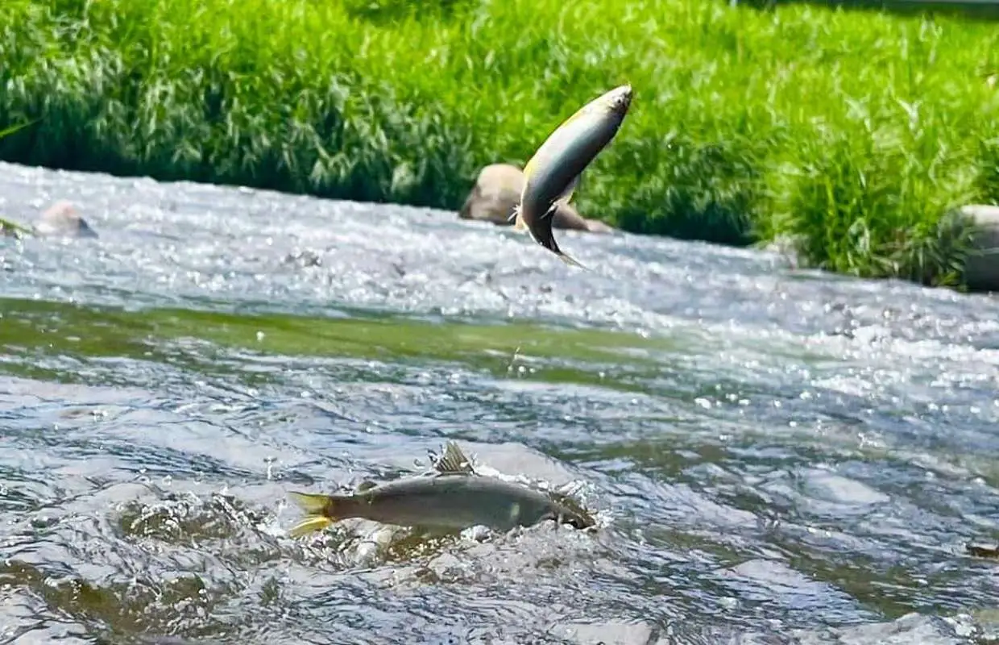

鴨川の生き物たち
京都のまちを流れる鴨川は、美しい風景だけでなく、多くの動植物が共に生きる生命の川です。春にはサギやカモが舞い、夏にはホタルやカエルの声が響きます。川辺の草むらには、季節ごとに違った野草や昆虫たちの姿も見られます。 このページでは、鴨川に生息する代表的ないきものたちを紹介します。一つ一つの命に目を向けることで、私たちは「身近な自然」がどれほど豊かで貴重かを実感できます。 自然とのつながりを再確認し、私たちの手で守っていくために、まずは「知ること」から始めましょう。
3.1 鳥類の世界
マガモ
冬鳥としてよく見られるカモの一種。鮮やかな緑色の頭を持つオスは特に目を引きます。
アオサギ
日本で見られるサギ類で最大級。じっと獲物を待つ姿は鴨川の風景の一部です。
カワセミ
「清流の宝石」と呼ばれる美しい鳥。小魚を捕らえるために急降下する姿は必見です。
カワウ
魚を捕るのが得意な水鳥。羽を広げて乾かす姿をよく見かけます。
トビ
鴨川によく見られるトビ（トンビ）は、大きく広げた翼と鋭い鳴き声が特徴の猛禽類です。
イカルチドリ
矶鹬は、川原の石の間をすばやく歩き回る、小さな体と長いくちばしが特徴の鳥です。
3.2 魚類と水生生物

アユ
清流の象徴。夏には「アユの友釣り」も行われます。
コイ
鴨川でも比較的大きな個体を見ることができます。悠々と泳ぐ姿は癒しを与えます。
ゲンジボタル
夏の夜、清らかな水辺で光を放ち、幻想的な風景を作り出します。
3.3 植物群落
ヤナギ
鴨川の河川敷に多く見られ、風になびく姿が風情を添えます。
サクラ
春には鴨川沿いの桜並木が、多くの人々を魅了します。
アシ
水辺に生育し、水質浄化にも貢献する重要な植物です。